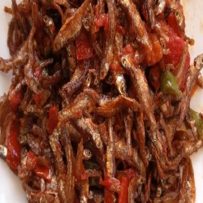

Kenyan Omena

This delicious Kenyan, and Tanzanian pan-fried omena (dagaa) stew with lemon is bursting with flavour! Made using simple kitchen ingredients such as tomatoes, onion, and garlic, this fish recipe is guaranteed to stand out each time you serve it!
Recipe
Ingredients
- 200 g omena
- 2 tomatoes
- Half onion
- Some salt
- Green pepper
- Cooking oil
Method
- Wash omena with hot water. And dry aside.
- Heat enough oil then add omena to fry till golden brown and crunchy
- Add onions and green pepper then mix
- Add tomatoes and salt. Cook to mix well
- Remove from heat and serve with ugali